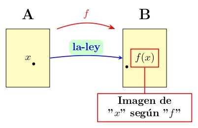

Cálculo I
Cálculo Diferencial para Ciencia de Datos
Elvis M. Sánchez Rogel ![]()
Universidad Técnica de Machala
2025-07-10
CORRESPONDENCIA DE CONJUNTOS
Si \("A"\) y \("B"\) son conjuntos cualesquiera, se llama correspondencia de \(A\) en \(B\) a todo criterio o ley que asocia elementos de \("A"\) con elementos de \("B"\).
Si el nombre del criterio es \("f"\), para expresar que \("f"\) es una correspondencia de \("A"\) en \("B"\) escibimos \(f:A\longrightarrow B\).
De \("A"\) se dice que es el conjunto inicial de \("f"\) de \("B"\) se dice es el conjunto final de \("f"\)

Observaciones:
En el conjunto inicial “A” puede haber elementos (177) a los que “f” no les asocia nungún elemento de “B”.
En el conjunto inicial “A” puede haber elementos (Pato) a los que “f” les asocie varios elemento de “B”.
En el conjunto final “B” puede haber elementos (5 y Luna) que no corresponden a ningún elemento de “A”.
En el conjunto final “B” puede haber elementos (Mesa) que corresponden a varios elementos de “A”.
Que quede clarito: en la definición de correspondecia no se impone ninguna restricción o traba al criterio \("f"\) que asocia elementos de \("A"\) con elementos \("B"\); por tanto queda definida una correspondencia de \("A"\) en \("B"\) en el mismo instante en que se establece un criterio o ley que asocie elementos de \("A"\) con elementos de \("B"\), aunque ese criterio sea muy absurdo o chiripitíflautico.
Si \(x \in A\) para referirnos al elemento de \("B"\) que \("f"\) asocia a \("x"\), usaremos la notación \("f(x)"\), que los profesionales leen efe de x, pero tú debes leer imagen de x según f.


Aviso navegantes:
¡Están condenados al fracaso los principiantes que se empecinen en leer como profesionales!, pues tras la notación \(f(x)\) hay 5 protagonistas, y el cerebro debe estar simultáneamente pendiente de todos ellos:
El conjunto \("A"\), que es protagonista invisible, pues \("A"\) no parece por ningún lado en la notación \("f(x)"\) … ¡pero está!.
El conjunto \("B"\), también invisible
La ley \("f"\) que asocia elementos de \("A"\) con elementos de \("B"\); es protagonista visible, pues en la notación \("f(x)"\) hay una \("f"\).
El elemento \("x"\) del conjunto \("A"\); también es visible, pues en la notación \("f(x)"\) hay una \("x"\).
El 5° protagonista es un elemento de \("B"\), pero no un elemento de cualquiera de \("B"\), el 5° protagonista es el elemento de \("B"\) que la ley \("f"\) asocia a \("x"\), y para denotarlo nadie ha inventado una notación más clara y concisa que \("f(x)"\), introducida por Euler en 1734.
Función real de variable real
¿No es fascinante cómo una función real de variable real puede describir el comportamiento de tantas situaciones en el mundo real, conectando conceptos abstractos con la realidad tangible?
Dirichlet,1854

Llamamos función real de variable real a toda correspondencia \(f: \mathfrak{R} \longrightarrow \mathfrak{R}\); o sea, una función real de variable real es una ley o criterio \(f\) que asocia números reales con números reales.

Se dice que \(f: \mathfrak{R} \longrightarrow \mathfrak{R}\) es una función real porque su conjunto final es \(\mathfrak{R}\) se dice que \(f\) es de variable real porque su conjunto inicial es \(\mathfrak{R}\)
Para expresar que el número real \(x \in \mathfrak{R}_{inicial}\) puede ser el que queramos, se dice que \(x\) es una variable independiente; y para expresar que el número real \(f(x) \in \mathfrak{R}_{final}\) que \(f\) asocia a \(x\) escapa por completo a nuestro control, pues es \(f\) quien decide el valor de \(f(x)\), se dice que el número real que denotamos \("f(x)"\) es una variable dependiente.
UTILIDAD DE LA FUNCIÓN REAL DE VARIABLE REAL (20 min)
Comprenderás la importancia de las funciones reales de variable real si imaginas que la variable independiente “x” representa la cantidad de capital invertido por una bodega, mientras que la variable dependiente \(f(x)\) representa la producción de vino obtenida.
\[ \overset{\large x}{\text{Capital}} \quad \longrightarrow \quad \overset{\large f(x)}{\text{Producción}} \]
Si invierto “x” euros, la producción de vino es \(1 + x^2\) litros. Es decir, mi función \(f\) de producción está definida por:
\(f(x) = 1 + x^2\)

Fijando ideas-problema parte 1 (capital-produccion)

Si el capital empleado varia desde “x” hasta “x+h”, la produccion obtenida varia desde \(f(x)=1=x^2\) hasta \(f(x+h)=1+(x+h)^2\). La pregunta seria? Cuantas unidades varia la produccion por cada unidad de varaicion de capital?
\[ \begin{array}{llll} \left\{ \begin{array}{l} \text{Tasa de cambio de "f" si v.i} \\ \text{varía desde "x" hasta "x+h"} \end{array} \right\} \equiv \frac{f(x+h)-f(x)}{(x+h)-x} \\ \equiv \frac{ \text{Variación de producción si el capital varía desde "x" a "x+h"} }{ \text{Variación de capital} } \equiv \\ \left\{ \begin{array}{l} \text{Variación MEDIA de producción por cada unidad} \\ \text{de variación de capital cuando este varía desde "x" a "x+h"} \end{array} \right\} \\ = \frac{(1+(x+h)^2)-(1+x^2)}{h}= \frac{2xh+h^2}{h} = 2x + h \end{array} \]
Fijando ideas-problema parte 1 (tiempo-velocidad)

Si el tiempo varia desde “x” hasta “x+h”, la velocidad obtenida varia desde \(f(x)=1+x^3\) hasta \(f(x+h)=1+(x+h)^3\). La pregunta seria? Cuantas unidades varia la velocidad por cada unidad de variacion de tiempo?
\[ \begin{array}{llll} \left\{ \begin{array}{l} \text{Tasa de cambio de "f" si v.i} \\ \text{varía desde "x" hasta "x+h"} \end{array} \right\} \equiv \frac{f(x+h)-f(x)}{(x+h)-x} \\ \equiv \frac{ \text{Variación de velocidad entre el instante "x" y el "x+h"} }{ \text{Variación de tiempo} } \equiv \\ \left\{ \begin{array}{l} \text{Variación MEDIA de velocidad por cada unidad} \\ \text{de variación de tiempo cuando este varía desde "x" a "x+h"} \end{array} \right\} \\ = \frac{(1+(x+h)^3)-(1+x^3)}{h}= \frac{3x^2h+3xh^2+h^3}{h} = 3x^2 + 3xh + h^2 \end{array} \]
Aceleracion media entre el instante “x” y el instante “x+h”
grafiac 1